Equipment and Products
5. Equipment and products
5.1 Types of catheters
A catheter is a thin hollow tube which can be inserted in the bladder either through the urethra or suprapubic.
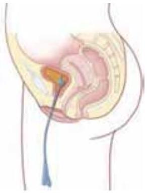Fig. 5 Female urethral catheter
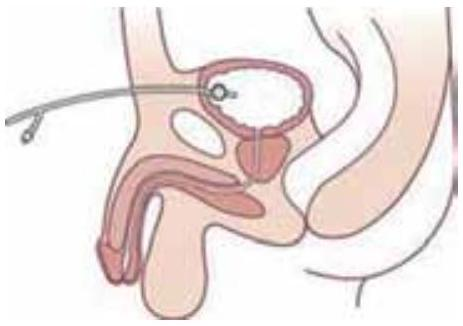Fig. 6 Male suprapubic catheter
5.1.1 One-way catheter
The catheter has only one channel for drainage, has no balloon and is available in coated and uncoated versions. This catheter is often referred to as "straight" catheter. This type of catheter is not intended to remain in the bladder for a long period of time but is used for:
- Intermittent catheterisation and collection of urine representative of the bladder
- Treating urethral strictures
- Instillation of drugs in the bladder (instillation catheter with Luer-lock)
- Urodynamic and other investigations
- Suprapubic catheterisation without balloon
Fig. 7 One-way catheters 1 to 5 (top to bottom) for the various uses as mentioned in the listing above this figure.
For more information on intermittent catheterisation see EAUN guideline Urethral catheterisation (2006).
5.1.2 Two-way catheter
In 1853, Jean Francois Reybard developed the first indwelling catheter with an inflated balloon to secure its place in the bladder. One channel is used for urine and one for the balloon. (Fig. 8)
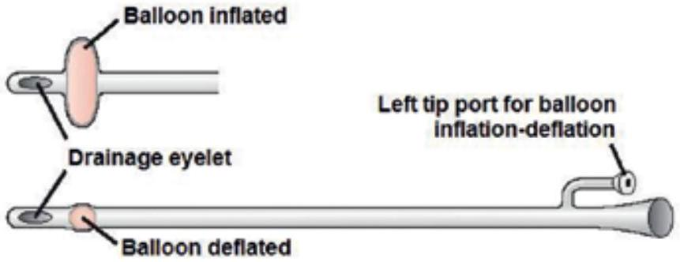Fig. 8 Two-way catheter with an inflated and deflated balloon
In 1932 Dr. Frederick Foley redesigned this catheter and the Foley catheter is currently the most frequently used device for management of urinary dysfunction. [46]
5.1.3 Three-way catheter
Three-way catheters are available with a third channel to facilitate continuous bladder irrigation. This catheter is primarily used following urological surgery or in case of bleeding from a bladder or prostate tumour and the bladder may need continuous or intermittent irrigation to clear blood clots or debris. [47] (Fig. 9)
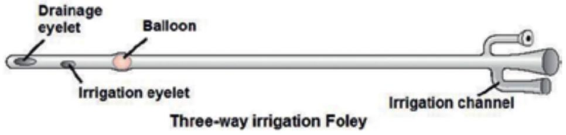Fig. 9 Three-way catheter with irrigation channel
5.1.4 Catheter with integrated temperature sensor
A silicone catheter with an integrated temperature sensor is available. (Fig.10) It is a special catheter which is sometimes used within intensive care and during certain surgical procedures. The catheter has a sensor near the tip, to measure the temperature of the urine in the bladder. This is an appropriate means of determining "deep" body or core temperature.
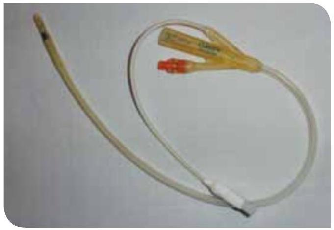Fig. 10 Catheter with a temperature sensor
5.1.5 Suprapubic catheter
The suprapubic catheter is an alternative to the urethral catheter and is inserted into the bladder surgically, often under local anaesthesia. In some countries the procedure is done by a doctor and in other countries by a clinical nurse specialist. Suprapubic catheters can be divided in different types:
- Foley balloon catheter; similar to the one used for urethral catheterisation. (Fig. 11)
- Catheter without a balloon; requires a suture to secure it in place. [48] (Fig. 12)
- Foley balloon catheter with an open end. (Fig. 13)
Fig. 11 Suprapubic catheter with a balloon
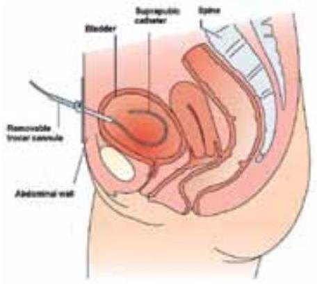Fig. 12 Suprapubic catheter without a balloon
A catheter with an open end has no "eyes" but an open end tip and is referred to as a "council" tip. This type of catheter can be used when changing a fine bore suprapubic catheter to a long-term catheter and when changing a long-term suprapubic catheter - all procedures over a guide wire.
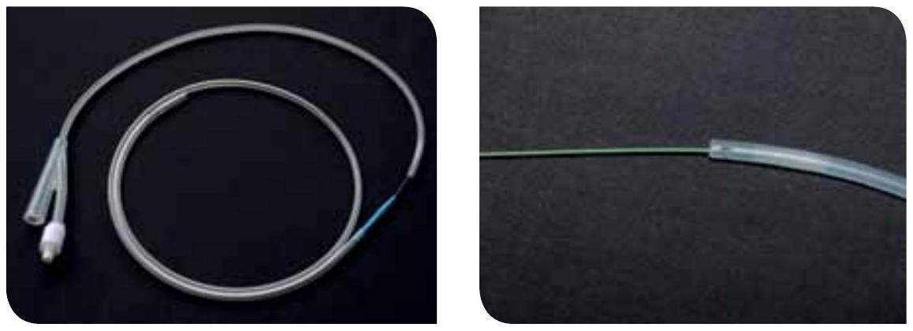Fig. 13 Open end catheter with a guide wire and a close-up picture where the guide wire enters the catheter
Different types of suprapubic sets for application are available. This sterile set includes for example a catheter, insertion trocar and plug. (Fig. 14)
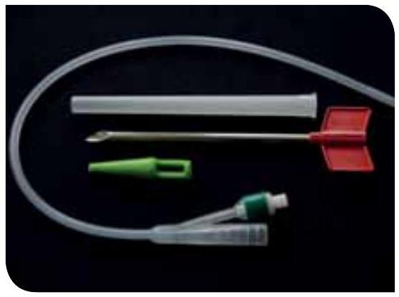Fig. 14 Catheter set
5.2 Catheter material
Catheters are available in various materials. Issues that should be considered when choosing a catheter are ease of use, tissue compatibility, allergy (latex), tendency for encrustation and formation of biofilm, comfort for the patient, e.g. [49] Some manufacturers produce catheters without phthalates and PVC-free catheters because PVC includes chlorine and plasticisers which are environmentally hazardous.
5.2.1 Catheters material
Latex
Latex, made from natural rubber is a flexible material but it has some disadvantages. Because of the potential discomfort due to high surface friction, vulnerability to rapid encrustation by mineral deposits from the urine and the implication of latex allergic reactions in the development of urethritis and urethral stricture or anaphylaxis, the use of latex catheters is restricted to short-term indwelling and commonly avoided if possible. [21]
Silicone
The silicone catheter (100% silicone) is very gentle for the tissue and is hypoallergenic. Because it is uncoated it has a relatively large lumen and has a reduced tendency to encrustation. While silicone causes less tissue irritation and potential damages, the catheter balloon has a tendency to lose fluid which increases the risk of displacement. The silicone catheters also have a greater risk for developing a cuff when deflated which can result in uncomfortable catheter removal or urethral trauma. [50] A Cochrane review from 2007 did not find sufficient evidence to determine the best type of indwelling urinary catheter for long-term bladder drainage in adults. [51] However, silicone catheters might be preferable to other catheter materials to reduce the risk of encrustation in long-term catheterised patients.
PTFE (polytetrafluoroethylene)
PTFE-coated latex catheters or Teflon has been developed to protect the urethra against latex. The absorption of water is reduced due to the Teflon coating. It is smoother than plain latex, which helps to prevent encrustation and irritation. Do not use this catheter for patients who are sensitive for latex. [49]
Silicone-coated/silicone elastomer-coated
Silicone elastomer coated catheters are latex catheters coated inside and out with silicone. The catheter has the strength and flexibility of latex and the durability and reduced encrustation typical of 100% silicone catheters. [52]
Hydrogel-coated
Hydrogel coated catheters are soft and highly biocompatible. Because they are hydrophilic, they absorb fluid to form a soft cushion around the catheter, and reduce friction and urethral irritations. [52]
Silver-coated catheter
One type of coating combines a thin layer of silver alloy with hydrogel which is antiseptic. Silver-hydrogel coated catheters are available in latex and silicone. Silver alloy coated catheters significantly reduce the incidence of asymptomatic bacteriuria, but only for less than 1 week. There is some evidence of reduced risk for symptomatic UTI. Therefore, they may be useful in some settings. [12] Another type, silver oxide coated catheters are not associated with a statistically significant reduction in bacteriuria. [21, 45]
Nitrofurazone-coated catheter
A catheter coated with nitrofurazone is also available. Nitrofurazone should be distinguished from the medicine " Nitrofurantoin". Nitrofurazone is a bactericidal compound which is used as an antibiotic. Antibiotic-impregnated catheters may decrease the frequency of asymptomatic bacteriuria within 1 week. According to Tenke (2008) there is, however, no evidence that antibioticimpregnated catheters decrease symptomatic infection. Therefore, they cannot be recommended routinely. [12, 45] Potential toxicity and/or antibiotic resistance using antimicrobial catheters is unknown. [21] (LE: 4)
For selection of the most suitable material the specifications of the supplier can be helpful.
| Recommendations | LE | GR |
|---|---|---|
| - Silicone catheters (100%) might be preferable to other catheter materials to reduce the risk of encrustation in long-term catheterised patients who have frequent obstruction of the catheter [16] | 1b | B |
| - Catheter materials designed for long-term use (100% silicone, silicone coating or hydrogel coating) should be used where catheter is expected to be used long-term (more than 2 weeks) [21, 51] | Unresolved Issue | |
| - Silver alloy coated catheters may reduce the risk of catheter-associated bacteriuria in hospitalised patients during short-term catheterisation (less than 1 week) [12, 53] | 1a | B |
| - Antibiotic-impregnated catheters may decrease the frequency of asymptomatic bacteriuria in hospitalised patients within 1 week | 1a | B |
| - There is no evidence that antibiotic-impregnated catheters decrease symptomatic infection and therefore they cannot be recommended routinely | Unresolved Issue | |
5.2.2 Catheter diameter size and length
Catheter diameter sizes are measured in Charrière (Ch or CH) also know as French Gauge (F, Fr or FG) and indicate the external diameter. 1 mm = 3 Ch and the sizes range from Ch 6 to 30.
- For paediatric use: size 6-10
- For adults: size 10 Clear urine, no debris, no grit (encrustation)
- size 12-14 Clear urine, no debris, no grit, no haematuria
- size 16 Slightly cloudy urine, light haematuria with or without small clots, none or mild grit, none or mild debris.
- size 18 Moderate to heavy grit, moderate to heavy debris. Haematuria with moderate clots
- size 20-24 Used for heavy haematuria, need for flushing [47]
The size of the catheter is marked at the inflation channel as well as with an (international) colour code. (Fig. 15)
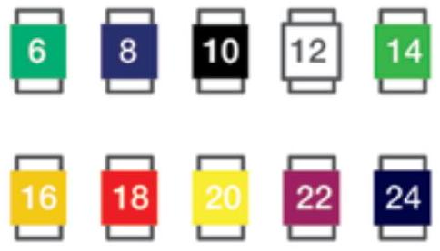Fig. 15 International colours of catheter size
The inner lumen of the catheter varies quite a lot between different catheter materials e.g. latex and a silicone catheter, so inserting a larger Charrière catheter does not necessarily ensure a wider drainage channel. [48] (Fig. 16)
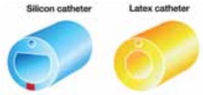Fig. 16 Examples of silicon and latex catheter lumen
Length
The standard male catheter length of 41-45 cm can be used for males and females, but a shorter female length of 25 cm can be more comfortable and discrete for some women. However, a female catheter can be too short if the woman is severely obese and then a male size is to prefer. The female length catheter should not be used for males as inflation of the balloon within the urethra can result in severe trauma. Paediatric catheters are normally about 30 cm long. [21]
| Recommendations | LE | GR |
|---|---|---|
| - Unless otherwise clinically indicated, consider using the smallest bore catheter possible consistent with good drainage, to minimise bladder neck and urethral trauma [16] | 1b | B |
| - In urethral catheterisation the female length catheter should not be used for males as inflation of the balloon within the urethra will result in severe trauma. [21] Use male standard length for men in all situations | 4 | C |
| - Male standard length is recommended for female patients who are bedbound, immobile, clinically obese with fat thighs, critically ill and post-operative and in emergency situations [23] | 4 | C |
5.2.3 Tip design
The standard tip of the catheter is round with two drainage eyes called a Nelaton catheter. (Fig. 17) For routine catheterisation, a straight-tipped catheter should be used. [52] In addition there are a variety of special catheters available on the market for specific use:
The Tiemann catheter with the curved tip is designed to negotiate the male prostatic curve and can be helpful for difficult insertions. [52] The Tiemann indwelling catheter from hard latex for difficult catheterisation is only indicated for short-term use. (Fig. 18)
The Coudé tip catheter has a curved tip just like the Tiemann catheter but has one, two or three drainage eyes situated in the curved tip.
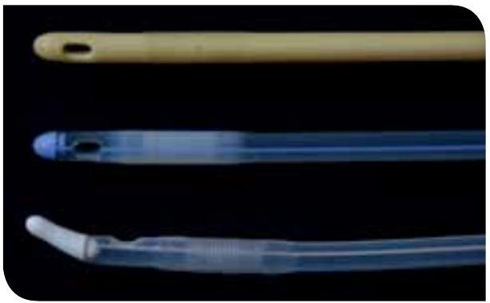Fig. 17 From top to bottom: Nelaton (latex), Nelaton (silicone) and Tiemann (silicone) (hard latex)
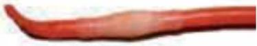Fig. 18 Tiemann indwelling catheter
| Recommendations | LE | GR |
|---|---|---|
| - For routine catheterisation, a straight-tipped catheter should be used | 4 | C |
| - The Tiemann/Coudé tip catheter can be used where male catheterisation is complicated | 4 | C |
| - Tiemann/Coudé tipped catheters should be inserted with the tip pointed upward | 4 | C |
5.2.4 Balloon size and filling
When the catheter has been placed in the bladder the balloon can be inflated. (Fig. 2) Sterile water or sodium chloride can be used for latex catheters. Inflation of silicone catheters with water can sometimes lead to water loss from the balloon over time, with an associated risk of the catheter falling out. Some manufacturers recommend filling the balloon with a 10% aqueous glycerin solution. [21] Apart from the manufacturers' recommendations there are no studies available about water contra glycerin in the balloon. Some catheter manufacturers provide sterile pre-filled syringes with sterile water or glycerine 10% inside the packing.
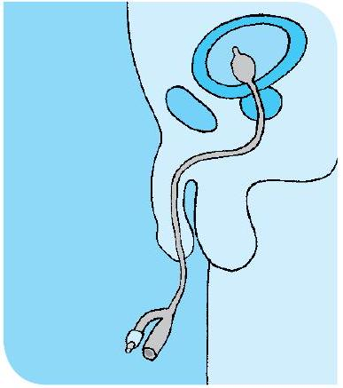Fig. 19 Inflated balloon in the bladder
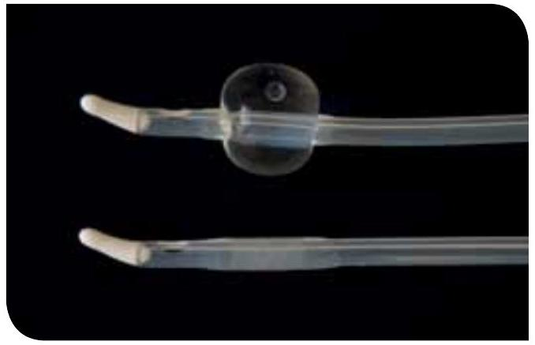Fig. 20 Silicone Tiemann catheter with deflated and inflated balloon
The balloon size is indicated at the catheter connection behind the size of the catheter as a minimum and maximum ml or cc(cm3) e.g. Ch 12 / 10-15 ml.
- Balloon size in adult catheters: 5-15 ml, 10 ml for standard use.
- Balloon size in haematuria catheters: 15-30 ml.
The 30 ml balloon is designed specifically as a haemostat post urological procedure, and should not be used for routine catheterisation. [54]
The purpose of the retention balloon is to keep the catheter in place in the bladder. The use of a larger balloon size is mistakenly believed to be a solution to bypassing of urine. [48]
Under- or over inflation can cause occlusion of drainage eyes, irritate the bladder wall, and lead to bladder spasms. [52] Furthermore, larger balloons tend to sit higher in the bladder with potential for increased residual urine volumes to collect below the catheter eyes. [21] Always inflate the balloon according to the manufacturer's recommended volume at the packaging and at the inflation valve. [52]
Some manufacturers have catheters with an integrated balloon, which means that the balloon is at the same level as the catheter when it is deflated. It can be an advantage when removing a catheter with encrustations, because the encrustations are gathered around the deflated balloon cuff.
| Recommendations | LE | GR |
|---|---|---|
| - Always inflate the balloon according to the manufacturer's instructions | 4 | C |
| - The 30 ml balloon is designed specifically as a haemostat post urological procedure, and should not be used for routine catheterisation | 4 | C |
5.3 Drainage bags
5.3.1 Closed drainage system
When the catheter has been inserted using aseptic technique, it is directly connected to the sterile bag, because an aseptic closed drainage system minimises the risk of catheterassociated urinary tract infections (CAUTI). [55] Unnecessary disconnection of a closed drainage system should be avoided, but if it occurs the catheter and collecting system have to be replaced using aseptic technique and sterile equipment. [16]
There are several different bags available; selection of the bag depends on whether it is for short-term drainage at the hospital or for long-term use, the patient's mobility, cognitive function, daily life etc. The bags can have a variety of special features:
Pre-connected drainage systems are available in which the drainage bag is already connected to a drainage bag in a sterile pack and a tamper-evident seal protects the connection. The use of urinary systems with pre-connected, sealed catheter-tubing junctions may reduce the occurrence of disconnection. [16] (Fig. 21)
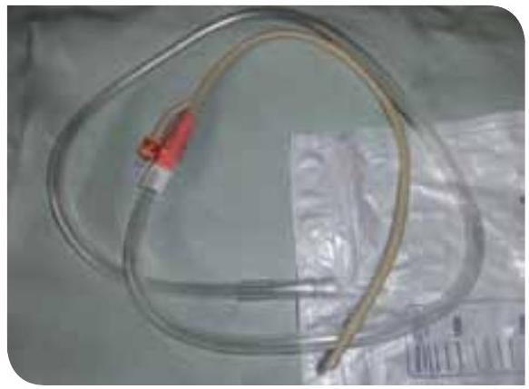Fig. 21 Pre-connected drainage system
Anti-reflux valve drainage bags are designed with either an anti-reflux valve or anti-reflux chamber to prevent reflux of contaminated urine from the bag into the tubing. [52] However, complex urinary drainage systems (utilising mechanisms for reducing bacterial entry such as antiseptic-release cartridges in the drain port) are not necessary for routine use. [16]
Sampling port: most drainage bags have a special sampling port designed to obtain urine specimens while maintaining a closed system. (Fig. 22) Some companies produce bags with a needle-free sampling port to avoid sharp injury.
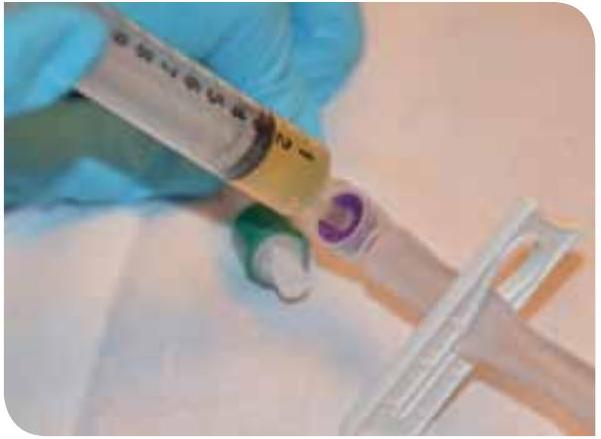Fig. 22 Collection of a catheter specimen of urine - needle free
5.3.2 Leg bag / body worn bag
If the patient is mobile a leg bag can be preferable. The leg bags allow maximum freedom and movement and can be concealed beneath the clothes. Leg bags are available in different sizes, designs and qualities and it is important to select a bag according to the patient's preference, patient mobility and the intended duration. (Fig. 23)
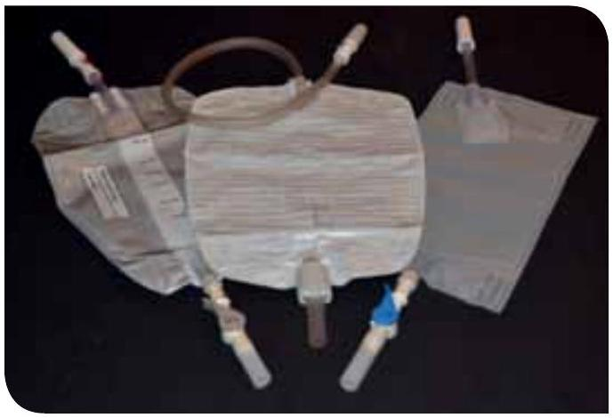Fig. 23 Different types of leg bags
- Capacity: ranges from 120 to 800 ml and the size depends on how often the bag has to be emptied according to the patient's daily routines.
- Chamber: the bags are available with a single or several chambers. Several chambers flatten the bags profile and are therefore more discreet.
- Materials: bags are produced in different materials with different backings and comfort. Some of the bags are PVC-free as well.
- Tube: ranges from about 4 cm to 45 cm and some can have an individual length by cutting the tube. In addition some tubes are kinking-free, which reduces the risk for obstruction.
- Suspension system: leg bags can be attached to the leg with straps (elasticated), nets, bags/ pocket of cotton, etc. (Fig. 24, 25, 26)
Fig. 24 Bag fixed at the leg
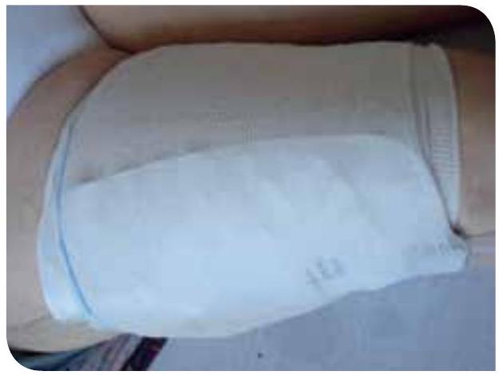Fig. 25 Special net for leg bag
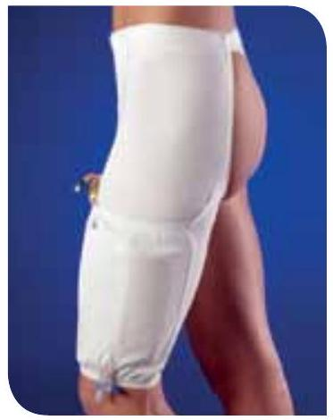Fig. 26 Cotton leg bag holder supported by wide elastic at the waist and on the pocket edge
Outlet tap: are available in different designs; barrel tap, lever tap and push-pull tap. [48] It is important to choose a bag with a tap the patient can manage especially in patients with reduced hand function. (Fig. 27, 28)
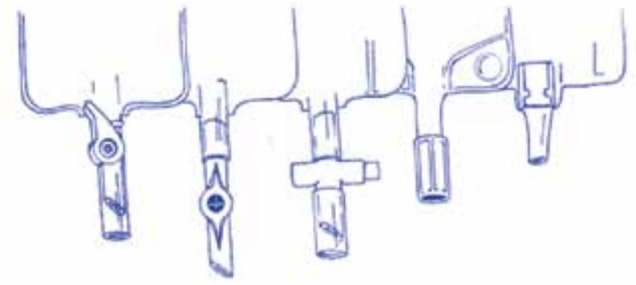Fig. 27 Examples of bag taps
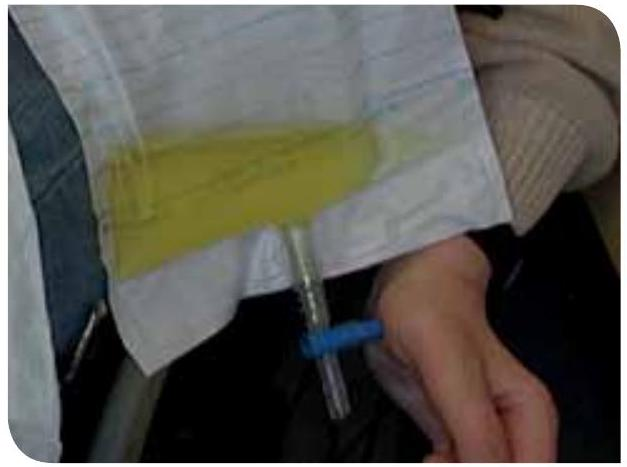Fig. 28 Quadriplegic patient with a poor manual dexterity.
Another discreet bag which allows mobility is the body-worn bag as for example the Belly bag® (Fig. 29). The bag can be used with either a suprapubic, a urethral or a nephrostomy catheter, but is not intended to be used with a male external catheter (condom or urosheath) in males. An anti-reflux valve behind the catheter port prevents reflux urine flow, which allows positioning this bag above the level of the bladder, contrary to other bags.
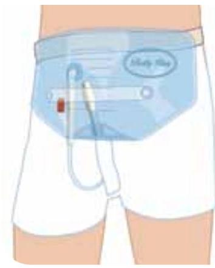Fig. 29 Body worn bag
5.3.3 Large capacity bag
Large capacity bags (2-4 litres) can be used post-operatively, if the patient is confined to bed or if the use of a leg bag is not appropriate. Some of the bags with a large capacity are provided with an urimeter which allows accurate measurement of urine in the intensive care patient.
Different outlet taps and tube lengths are available as for leg bags (see 5.3.2).
Overnight / bedside bag
The large capacity bags can be used as a night bag as well. Patients normally require a 2 litre drainage bag that is connected to the leg bag at night or if they are immobile / bedbound. The outlet tap on the leg bag is left open so that the urine collects in the larger bag without breaking the closed drainage system. [56] (Fig. 30) The night bag requires a stand for support, to reduce the risk of dislodging the link system and is available in different designs and materials. [48] (Fig. 31)
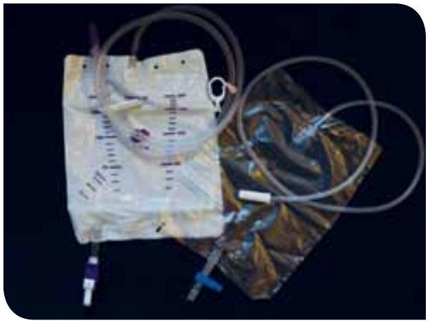Fig. 30 Different types of night bags
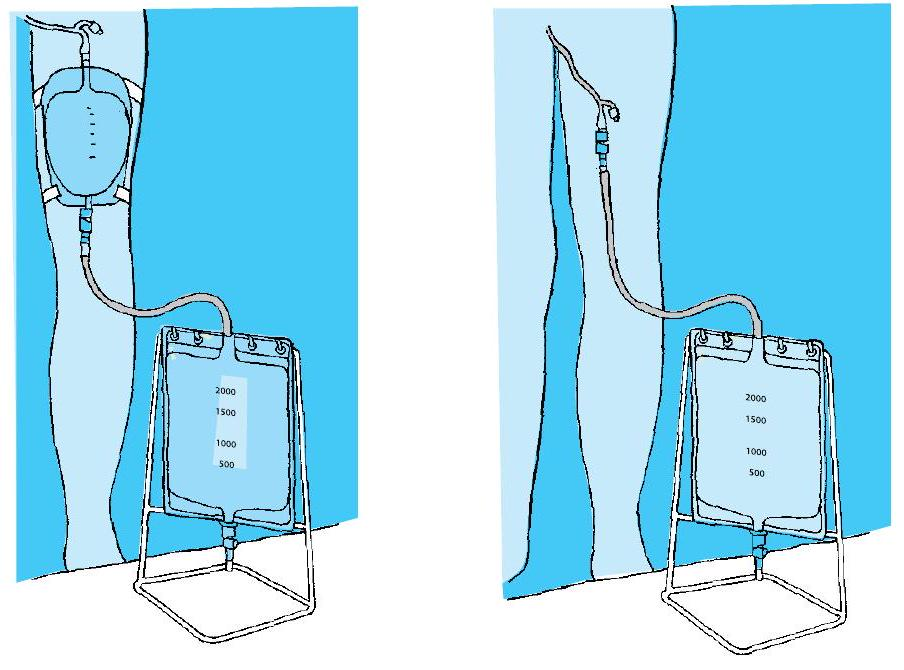Fig. 31 Overnight drainage system
5.3.4 Single use urinary bag
Over the last few years, technique has changed from sterile to clean in home care setting. In some countries clean, single-use non-drainable night bags are used which means that when the bag is full it has to be changed since the bag cannot be emptied. In other countries, night bags are cleaned and reused for long-term catheters at home. More research is needed to ensure that guidelines and resultant care are based on existing evidence rather than on custom and common practice. [57]
| Recommendations | LE | GR |
|---|---|---|
| - A closed drainage system should be maintained to reduce risk of catheter-associated infection [16] | 1b | B |
| - Unnecessary disconnection of a closed drainage system should be avoided, but if it occurs the catheter and collecting system have to be replaced using aseptic technique and sterile equipment [16] | 1b | B |
| - Complex urinary drainage systems (utilising mechanisms for reducing bacterial entry such as antiseptic-release cartridges in the drain port) are not necessary for routine use [16] | 1b | B |
| - In making urinary drainage bag selections particular attention should be focused on: the ability of the user to operate the tap, comfort; freedom from leakage and discretion [21] | 4 | C |
| - The patient's individual needs and personal preferences should determine the use of leg/suspension/attachments and position of where the bag is worn [21] | 4 | C |
| - Further research is needed on disinfection of the urinary bag and reusing the urinary bag | Unresolved issue | |
| - Consult national policies for working with medical devices - and reuse of single material | 4 | C |
5.4 Catheter valves
Valves are small devices connected to the catheter outlet instead of a bag and are available in a variety of designs. (Fig. 32)
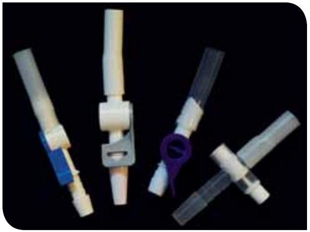Fig. 32 Different catheter valves
The catheter valves are an alternative to leg bags/body-worn bags which give the patient more freedom to move and more discreet drainage. Most valves are designed to fit with linked systems so it is possible to connect to a drainage bag. For example in the night-time, for journeys, etc. [48] The valves provide a well-accepted system of bladder emptying for suitable patients who are able to manipulate the valve mechanism and empty the bladder regularly to avoid overfilling. Another advantage is that the valve offers the potential for maintenance of bladder function, capacity and tone by allowing the filling and emptying of the bladder. [21] Furthermore, research has shown that using a catheter valve with a two to four-hourly release has been associated with reduced catheter blockage. [58] The valve is not an optimal solution for all patients and the nurse specialist has to assess the suitability for each patient. However, in some countries the use of catheter valves is not approved.
The catheter valve is contraindicated in a patient with:
- Severe cognitive impairment (the patient must be able to recognise the need to empty the bladder through sensation or on a timed schedule)
- Overactive bladder syndrome; might cause urinary leakage
- Urethral reflux or renal impairment
- Small or limited bladder capacity; the valve would have to be opened very often
- Urinary tract infection
- Poor manual dexterity [59]
| Recommendations | LE | GR |
|---|---|---|
| - Catheter valves provide a well-accepted system of bladder emptying for suitable patients who are able to manipulate the valve mechanism and empty the bladder regularly [21] | 4 | C |
| - A combination of a valve during the day and free drainage at night through an open valve connected to a drainage bag could be an appropriate management strategy [21] | 4 | C |
| - Suitability for catheter valves should be assessed by a health care professional | 4 | C |
| - When a catheter valve is used a two to four-hourly release is recommended [58] | 2a | B |
| - Further research is needed about the use of catheter valves and urinary tract infection | Unresolved issue | |
5.5 Catheter securement devices
Catheter securement devices are designed to prevent excessive traction of the catheter against the bladder neck or inadvertent catheter removal. There are different kinds of securement devices such as tape, Velcro™. (Fig. 33, 34)
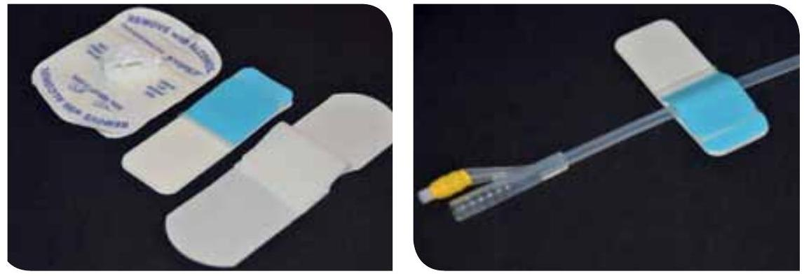Fig. 33 and Fig. 34 Different types of catheter securement devices
For more information about catheter securement see 6.5.5 Stabilising of the urethral catheter.
5.6 Lubricating gel
The lubricant dilates and lubricates the urethra. The lubricant does not need to be antiseptic [60] or anaesthetic.
Four types of lubricants can be distinguished:
- Water soluble lubricants
- Water soluble lubricants with chlorhexidine (antiseptic)
- Water soluble lubricants with anaesthetic lignocaine/lidocaine
- Water soluble lubricants with anaesthetic lignocaine/lidocaine and chlorhexidine